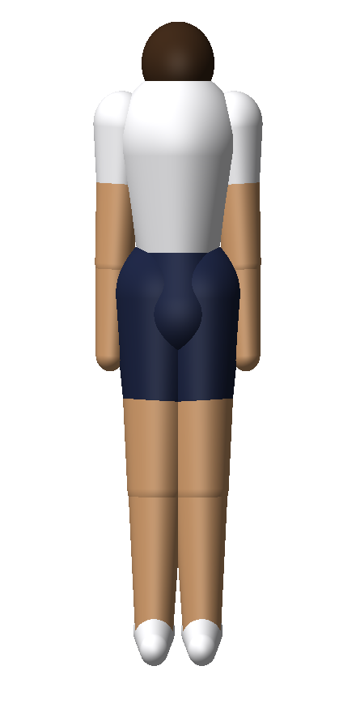
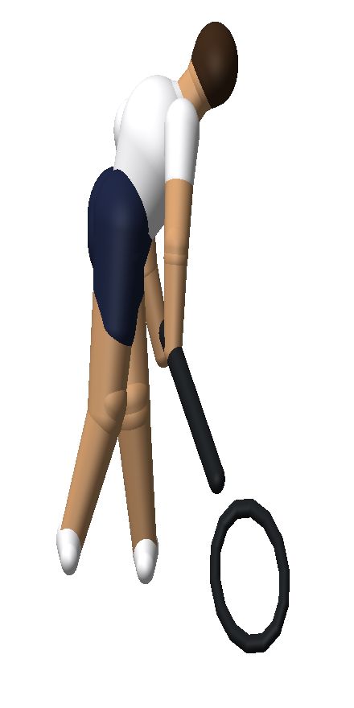

<!doctype html><meta charset=utf-8><title>Low-poly player model</title>
<style>
 body{margin:0;background:#0e1b2e;color:#cfe;font:14px system-ui;display:flex;gap:36px;padding:26px;align-items:flex-start}
 figure{margin:0;text-align:center}
 img{background:#fff;border:1px solid #24405f;display:block;height:74vh}
 figcaption{margin-top:10px;font-weight:700;letter-spacing:.04em}
 .n{color:#7fd;font-weight:400;font-size:12px;max-width:340px;margin:8px auto 0;line-height:1.55;text-align:left}
</style>
<figure><figcaption>Idle</figcaption>
<div class=n>21 tapered segments, ray-traced with true surface normals. Lean athletic
build: shoulders 21% of height, hips 16%, thigh 12%, upper arm 8%.</div></figure>
<figure><figcaption>Pre-serve</figcaption>
<div class=n>Same builder driven by a different skeleton &mdash; poses are constructed,
never deformed, so they hold together identically.</div></figure>
